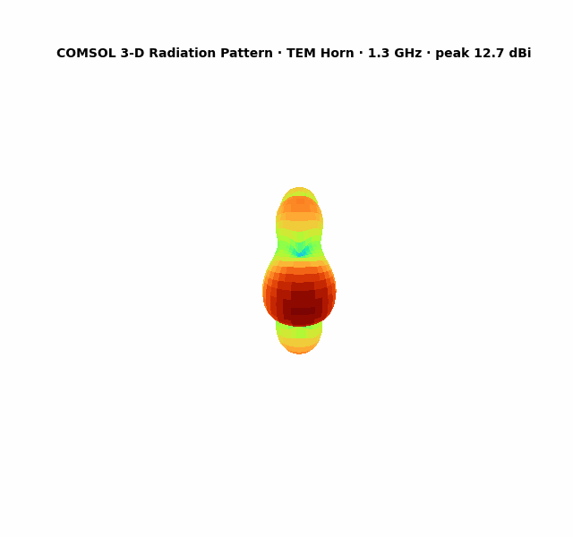
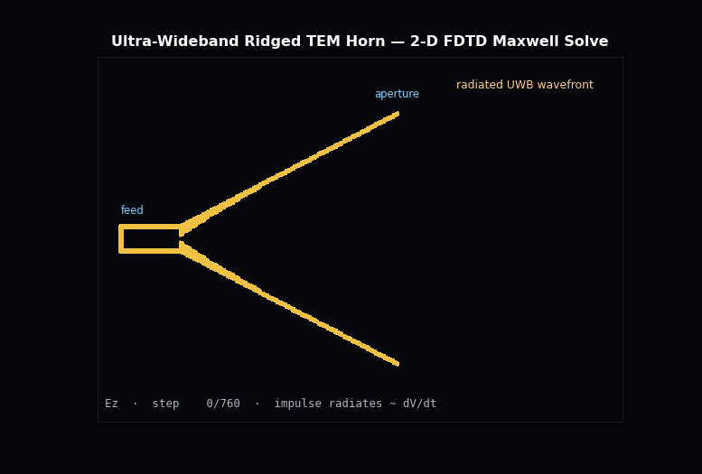
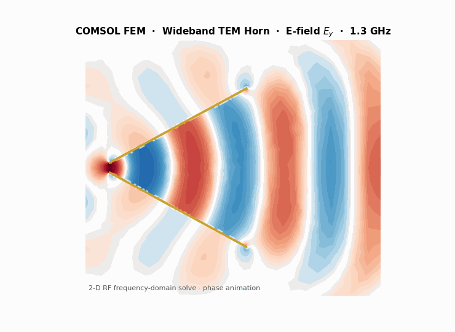

Antennas · RF & microwave
Antenna design & full-wave electromagnetic simulation
From horn and ultra-wideband (UWB) antennas to millimeter-wave radiators and waveguide mode converters — I design antennas and verify them with full-wave COMSOL modeling, then validate against measurement.



Design capability
The full-wave model yields the reflection coefficient (return loss / S-parameters), near- and far-field radiation patterns, gain, aperture efficiency and bandwidth. This supports horn and UWB antennas, waveguide-to-radiator transitions, and rectangular-to-circular mode converters — including 3-D-printed millimeter-wave hardware, where I have designed and experimentally validated Ka-band horn antennas and X-band mode converters (simulation and measurement in close agreement).